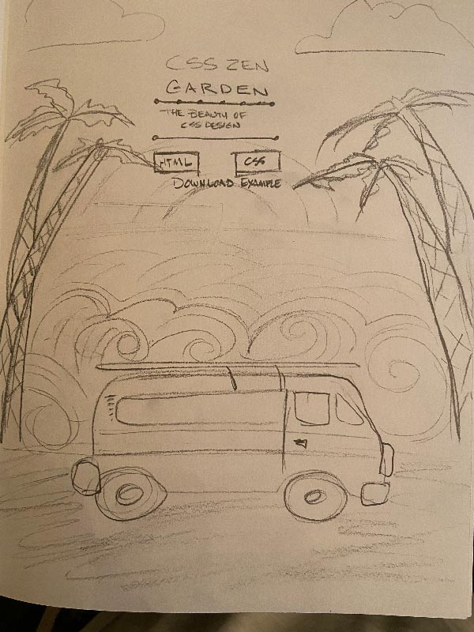
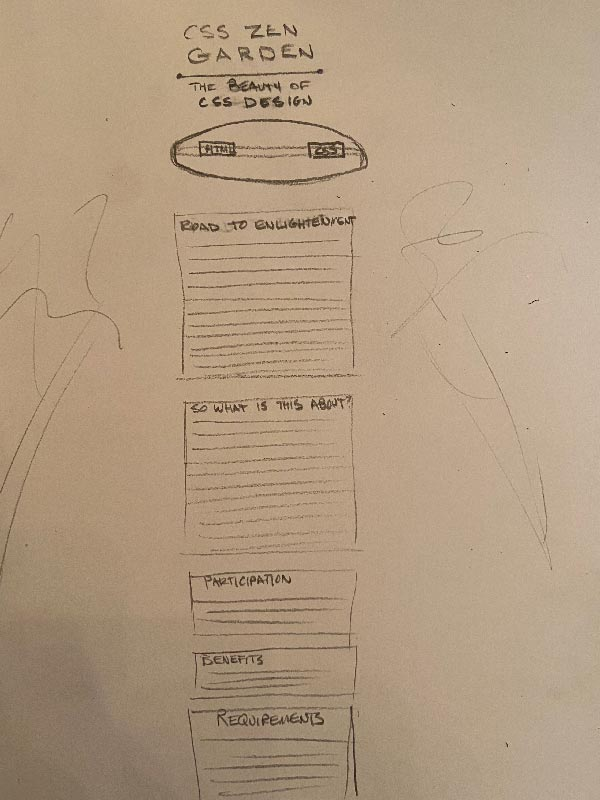
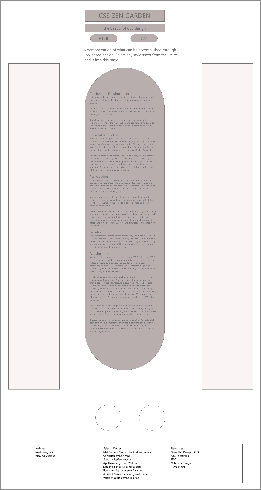
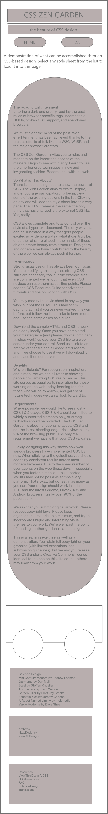

INTRODUCTION
CSS Zen Garden is a public design/development project that gives participants the same HTML markup and challenges them to leverage the power of CSS to make it their own. The variety of layouts created by participants in the past boggles the mind; almost anything you can think of has been turned into a CSS Zen Garden!
Our group spent some time looking at what's been done in the past and decided to move forward with a theme that has us all excited: vintage California surf. It's a warm, friendly, retro theme that capitalizes on current design trends while still being unique from anything else we could find in the CSS Zen Garden universe. We are excited to see where we can take it.
INSPIRATION


TYPOGRAPHY
To honor the source material, headlines in the project will use Pacifico, or something similar, to give off the vintage California vibe. The typography for the body will be a nice contrast: something super simple, lean, and easily readable. This might be Helvetica or another 1960s Swiss-style sans-serif.
Here's an example of the Pacifico typeface. We will be using it sparingly,for impact.
Here's an example of Helvetica. We will be using it, or another sans serif for the majority of the copy.
INITIAL SKETCHES
After choosing our theme and agreeing on a general feel and color palette for our project, we moved forward with rough sketches to begin working through ideas about how we could incorporate the CSS we are learning with our project.
Our initial ideas include palm trees that wave gently in the breeze, a subtle wave background that undulates, clouds that float lazily past in the sky, and wheels that turn and bounce over the rough surf road on our vintage VW Bus. I'm sure we will discover other ideas that we can implement as we learn more this semester and dig deeper into our theme.
 WIREFRAMES
The first lo-fi wireframe shows basic shapes and relatoinships between content. We anticipate it will change a lot in the coming weeks. Still, you can see the basic full-screen structure, with palm trees on the side, the van at the bottom, and much of our content flowing down the middle, over a surfboard.
The second lo-fi wireframe is a pared down version of its big brother, maximized for display on a mobile screen. We recognize we'll have to approach this thoughtfully to make sure we capture what makes the full-screen version unique in an easy-to-read mobile package.
 